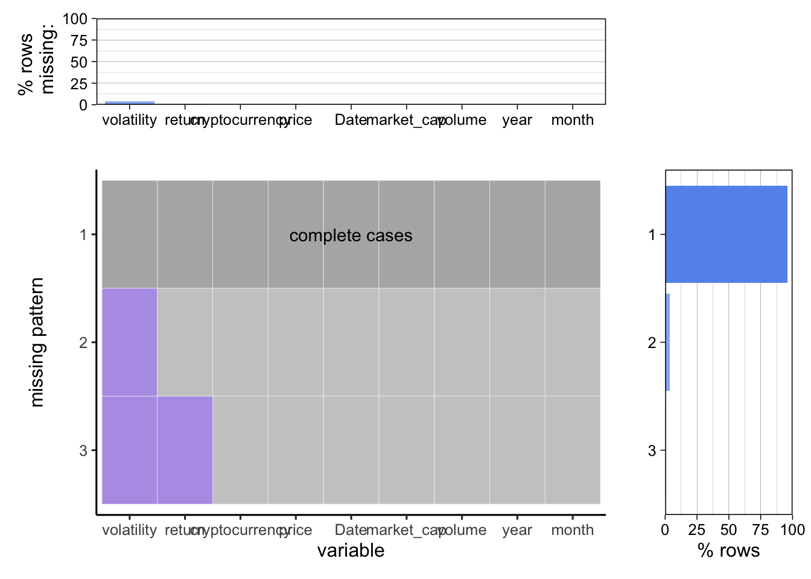

Chapter 4 Missing values

Observed that volatility and return contains missing values. Take a look into number of missing value in columns we found:
## volatility return cryptocurrency price Date
## 75 5 0 0 0
## market_cap volume year month
## 0 0 0 0Calculating volatility requires 15 days data beforehand and return need 1 day data beforehand. Thus each cryptocurrency return variable missed one rows and volatility missed 15 rows of data. In total we have 75 volatility values and 5 return values missing.